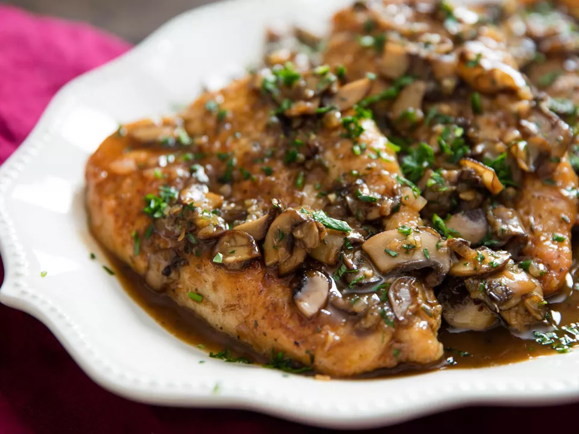

Serious Eats Chicken Marsala

Description
Chicken marsala is one of the easiest and most flavorful dishes every
home cook should learn how to make. As long as you follow a couple of
simple tips, you can reproduce an amazing chicken marsala every single time.
The most important of several tips is to never use grocery store marsala wine!
Even the cheap stuff from your neighborhood liquor store will suffice. The next
most important tip is to get yourself a pair of swimming googles because cutting
this amount of shallots will definitely make you cry waterfalls.
Ingredients
- 1 1/4 cups (300mL) Marsala wine
- 3/4 cup (180mL) chicken stock
- 1 packet unflavored gelatin (10g)
- 4 boneless, skinless chicken cutlets
- Kosher salt and freshly ground black pepper
- ~1 cup all-purpose flour (140g), for dredging
- 1/4 cup (60mL) extra-virgin olive oil, plus more if needed
- 10 oz (280g) cremini mushrooms, stemmed and thinly sliced
- 4 medium shallots (165g), minced
- 2 medium cloves garlic, minced
- 1 tsp (3g) fresh thyme leaves, minced
- 3 Tbsp (45g) cold unsalted butter, cut into cubes
- 1 tsp (5mL) soy sauce
- White wine vinegar, sherry vinegar, or fresh lemon juice, to taste
- Minced fresh parsley, for garnish